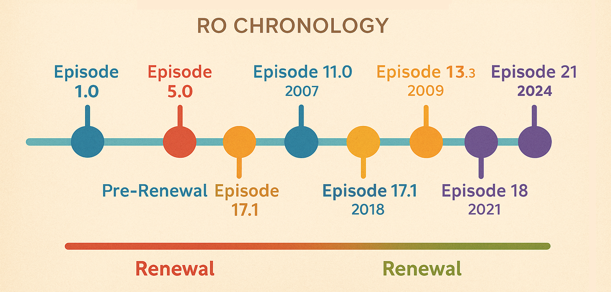

Pre-Renewal 复兴前
| 时间线 | EP 版本 | 更新内容 | 更新内容（中文） |
|---|---|---|---|
| 2002.08.03 | Episode 1.0 | Start of the Adventure | 冒险的开始 |
| 2002.12.17 | Episode 2.0 | Lutie | 卢蒂（圣诞小镇） |
| 2003.02.04 | Episode 3.0 | Comodo | 科摩多（海滨城市） |
| 2003.05.02 | Episode 4.0 | War of Emperium | 帝国战争（公会战） |
| 2003.07.15 | Episode 5.0 | Yuno | 尤诺（飞空都市） |
| 2003.10.07 | Episode 6.0 | Global Project | 全球计划 |
| 2003.10.11 | — | Amatsu | 天诛（日本风城镇） |
| 2003.10.11 | — | Kunlun / Gonryun | 昆仑 |
| 2003.11.25 | — | Weddings/Marriage | 婚礼/结婚系统 |
| 2004.01.13 | — | Super Novice | 超级初心者 |
| 2004.01.30 | Episode 7.0 | Umbala ~ Village of the Utan Tribe | 乌巴拉（乌坦族村落） |
| 2004.02.02 | — | 2-1 and 2-2 class in Sakray | 二转职业（测试服） |
| 2004.02.24 | Episode 8.1.1 | Niflheim ~ City of the Dead | 尼夫海姆（死者之城） |
| 2004.12.23 | Episode 8.1.2 | Louyang & Jawaii | 洛阳 & 情人岛 |
| 2004.12.23 | Episode 8.2 | Ayothaya | 阿育陀耶（泰国风城镇） |
| 2005.01.18 | Episode 8.3 | Payon Remodelling | 裴扬重制 |
| 2005.05.12 | Episode 9.0 | Rebirth | 转生系统 |
| 2005.09.21 | Episode 10.1.1 | The Sign & Geffenia Dungeon | 魔戒任务 & 吉芬尼亚地下城 |
| 2005.09.22 | Episode 10.1.2 | Einbroch | 艾音布洛克（钢铁都市） |
| 2006.02.24 | Episode 10.2 | Lighthalzen | 莱赫塔因 |
| 2005.08.16 | Episode 10.3 | Noghalt | 诺格哈特 |
| 2006.12.28 | Episode 10.4 | Hugel | 修格尔 |
| 2007.04.20 | Episode 11.1 | Rachel | 瑞秋 |
| 2007.09.10 | Episode 11.2 | Veins | 维恩斯 |
| 2007.04.10 | Episode 11.3 | Nameless Island | 无名岛 |
| 2007.04.10 | — | Mercenary System | 雇佣兵系统 |
| 2007.10.17 | Episode 12 | Satan Morroc | 魔王摩洛克 |
| 2007.10.17 | — | Moscovia | 莫斯科比亚 |
| 2007.11.21 | — | WoE: SE（Schwaltzvald） | 公会战 SE（施瓦茨瓦尔德） |
| 2007.11.21 | — | WoE: SE（Arunafeltz） | 公会战 SE（阿鲁纳贝兹） |
| 2007.12.05 | — | World Map System | 世界地图系统 |
| 2007.12.10 | — | Battlegrounds | 战场系统 |
| 2007.12.12 | — | Endless Tower & Sealed Shrine | 无尽塔 & 封印神殿 |
| 2008.06.25 | Episode 13.1 | Ash Vacuum | 灰烬荒境 |
| 2008.08.25 | — | Poring Wars | 波利战争 |
| 2008.11.19 | — | Improved Pet System | 宠物系统改版 |
| 2008.12.17 | Episode 13.2 | Encounter | 邂逅篇 |
| 2008.12.23 | — | New Pets | 新宠物 |
| 2009.02.25 | — | Hidden Slot Enchantment | 隐藏插槽附魔 |
| 2009.03.11 | — | Endless Tower Fixes | 无尽塔修复 |
| 2009.04.08 | — | New Hairstyles | 新发型 |
| 2009.06.17 | — | Renewal Release（3-1 Jobs） | 复兴系统上线（三转 3-1 职业） |
| 2009.08.19 | — | Brasilis | 巴西利斯 |
| 2009.10.14 | — | 3-2 Jobs | 三转 3-2 职业 |
Renewal 复兴后
| 时间线 | EP 版本 | 更新内容 | 更新内容（中文） |
|---|---|---|---|
| 2009.12.23 | Episode 13.3 | El Dicastes | 艾尔迪卡斯特斯 |
| 2010.03.17 | — | Party Recruiting System | 队伍招募系统 |
| 2010.03.31 | — | Baby 3rd Jobs | 三转宝宝职业 |
| 2010.05.12 | — | Purchasing Shops；Sorcerer Spirit System | 收购商店；巫师灵魂系统 |
| 2010.06.30 | Episode 14.1 | Bifrost | 比佛罗斯 |
| — | (Memorial Dungeon：Misty Labyrinth Forest) | 纪念副本：迷雾迷宫 | |
| 2010.07.28 | — | Equipment Synthesis；Costume System | 装备合成；时装系统 |
| 2010.08.18 | — | Search Vending Shops | 摊位搜索系统 |
| 2010.09.29 | — | Indonesia Localized Map：Dewata | 印尼本地化地图：德瓦塔 |
| 2010.11.24 | — | Cat Hand HQ / Malangdo | 猫手本部 / 马朗多岛 |
| — | Item Mall Icon | 商城图标 | |
| — | Level 86~99 Eden Group Quests on 2nd Floor | 伊甸园 86~99 级任务（2 楼） | |
| — | Floor 6 added to Izlude Dungeon（Gold Netcafe only） | 伊斯鲁德地牢新增 6 层（仅金网吧） | |
| — | Grave Markers | 墓碑标记 | |
| — | New Mounts | 新坐骑 | |
| 2010.12.29 | — | Super Novice Expansion | 超级初心者扩展 |
| 2011.03.09 | — | Replay System | 回放系统 |
| 2011.03.30 | — | Biolabs 4th Floor | 生物实验室四层 |
| 2011.05.25 | — | Thanatos Tower Changes | 塔纳托斯之塔调整 |
| 2011.06.29 | — | WoE1 Renewal（工事） | 公会战 1 改版（施工） |
| — | Number of forts reduced from 5 to 4 in WoE1 castles | 城堡数调整为每城 4 堡 | |
| — | Guild Investment System（Hall of Abyss） | 公会投资系统（深渊之厅） | |
| — | New Guild Dungeon | 新公会地牢 | |
| 2011.08.17 | — | 7×7 Padding around NPCs | NPC 周围 7×7 无碰撞区 |
| 2011.08.31 | — | Class Balance + Homunculus S | 职业平衡 + S 级生命体 |
| — | Class balancing roundup | 职业平衡整理（iROwiki 论坛） | |
| — | Homunculus S | S 级生命体（进化） | |
| 2011.09.28 | — | Philippines Localized Map：Port Malaya — [1]；[2] | 菲律宾本地化地图：马来港 |
| 2011.11.02 | — | Kagero and Oboro Job Classes（[1]，[2]） | 影狼 / 朧 职业（链接占位） |
| 2011.11.16 | — | New Alberta | 新阿尔贝塔 |
| 2011.11.30 | — | Eden Quests for Lv100~110 | 伊甸园 100~110 级任务 |
| 2011.12.07 | — | Nightmare Pyramid | 金字塔梦魇 |
| 2011.12.14 | — | Party System improvements | 队伍系统改进 |
| 2011.12.21 | Episode 14.2 | Eclage | 艾克拉休 |
| 2011.12.27 | — | Battlegrounds Queue System | 战场排队系统 |
| 2012.02.08 | — | New Carts for Mechanics & Genetics. | 机械师/基因学新推车 |
| 2012.02.08 | — | Guild Creation system to no longer allow blank space(s) in the name. | 公会名禁止空格 |
| 2012.03.21 | — | Eden Quests for Level 111 ~ 120. | 伊甸园 111~120 级任务 |
| 2012.03.21 | — | Falcon Flute | 隼笛 |
| 2012.03.28 | — | Navigation System. | 导航系统 |
| 2012.03.28 | — | New Izlude + Novice Training Academy + New Character Creation Method (5 copies of Izlude) | 新伊斯鲁德 + 新手学院 + 新建角方式 |
| 2012.04.04 | — | HP Bars added to Monsters. | 怪物显示血条 |
| 2012.04.18 | — | Changes to Enchanting on Malangdo | 马朗多附魔调整 |
| 2012.04.25 | — | WoE: Training Edition | 公会战：训练版 |
| 2012.04.25 | — | Transcendent quest to waive the cost of transcending. | 转生任务费用免除 |
| 2012.05.30 | — | Old Glastheim memorial dungeon | 古城格拉斯海姆副本 |
| 2012.06.13 | — | Monster Shadow Size | 怪物阴影尺寸 |
| 2012.07.11 | — | Headgear Synthesis Quests | 头饰合成任务 |
| 2012.07.25 | — | WoE:TE Mini God Item quest + guild and daily quests in siege areas. | TE 小神装任务 + 攻城区域日常 |
| 2012.08.14 | — | Job EXP increased from Monsters with lvl 100+. | 100 级以上怪经验↑ |
| 2012.08.22 | — | Heroes’ Trails (Part 1) | 英雄之迹（第一部） |
| — | Faceworm Nest, Memorial Dungeon. | 面虫巢穴（副本） | |
| — | Sarah’s Memory, Memorial Dungeon. | 莎拉的记忆（副本） | |
| 2012.08.22 | — | Memorial Dungeon, Wave. | 波纹副本 |
| 2012.08.22 | — | Added new Eden quests for level 121 ~ 130 range. | 新增 121~130 级伊甸园任务 |
| 2012.08.22 | — | Max base level changed from 150 to 160/50. | 等级上限改为 160/50 |
| 2012.08.22 | — | Skill Timers | 技能计时器 |
| 2012.09.19 | — | Champion Mobs. | 冠军怪 |
| 2012.10.10 | — | Ranger Falcon changed to Owl. | 游侠猎鹰改为猫头鹰 |
| 2012.10.17 | — | Heroes’ Trails (Part 2) | 英雄之迹（第二部） |
| — | Devil’s Tower Memorial Dungeon | 恶魔之塔副本 | |
| — | Cursed Knight Memorial Dungeon | 被诅咒的骑士副本 | |
| — | Geffen Magic Tournament Memorial Dungeon | 吉芬魔法大会副本 | |
| 2012.10.31 | — | Eden Quests for levels 131~140. | 伊甸园 131~140 级任务 |
| 2012.12.18 | — | Horror Toy Factory Memorial Dungeon | 恐怖玩具工厂副本 |
| 2012.12.18 | — | Shadow System | 影子装备系统 |
| 2012.12.28 | Episode 14.3 | Decisive Battle (Part 1) | 决战（第一部） |
| 2013.02.20 | — | Equipment Comparison System | 装备对比系统 |
| 2013.03.13 | — | ‘Clock Tower Dungeon’ Nightmare Mode | 钟楼地牢梦魇 |
| 2013.03.20 | — | Decisive Battle (Part 2) | 决战（第二部） |
| 2013.03.20 | — | Level Increased to 175 / 60 | 等级上限提升至 175/60 |
| 2013.03.20 | — | New Third Class Skills | 新三转技能 |
| 2013.05.22 | — | Max Zeny Vending Price = 1 Billion Zeny | 摆摊单价上限 10 亿 Z |
| 2013.06.12 | — | Bank System | 银行系统 |
| 2013.06.26 | — | Clan System (Golden mace Guild, Sword Guild, Crossbow Guild and Rod Guild) | 门派系统（金锤/剑/弩/法杖） |
| 2013.07.03 | Episode 15.1 | Fantasmagorica | 幻影之城 |
| — | Lots of NPC placement changes | 大量 NPC 位置调整 | |
| — | 5 New Quests | 新增 5 个任务 | |
| — | Memorial Dungeon, Charleston Factory | 纪念副本：查理工厂 | |
| — | New Items | 新道具 | |
| 2013.07.31 | — | Rebellion Class | 反叛者职业 |
| 2013.08.02 | — | Rebellion Weapons | 反叛者武器 |
| 2013.08.14 | — | New Clothing Dyes for Kagerou & Oboro classes | 影狼/朧 新染色 |
| 2013.08.21 | — | Max HP Limits (lvl 99 = 330k, 150 = 660k, 175 = 1.1m) | 最大 HP 上限（99/150/175） |
| 2013.09.25 | — | Heroes’ Trail Part 3 | 英雄之迹（第三部） |
| — | Fenrir and Airship Assault Memorial Dungeons | 芬里尔与飞空船突袭副本 | |
| 2013.12.17 | — | Nightmare Biolabs | 生物实验室梦魇 |
| 2013.12.23 | Episode 15.2 | Memory Record | 记忆录 |
| 2014.01.08 | — | New World Map | 新世界地图 |
| 2014.01.22 | — | Shop History (Buy/Sell Log) | 商店交易记录 |
| 2014.03.12 | — | Eden Group Market Hall | 伊甸园集市 |
| 2014.04.16 | — | Summons & Homunculus S Update | 召唤/生命体 S 更新 |
| 2014.08.06 | — | Monster EXP Increased (Base 75% & Job 100%) | 怪物经验上调（基礎 75%/职业 100%） |
| 2014.08.06 | — | Monster HP/ATK Adjustment | 怪物 HP/攻击调整 |
| 2014.09.16 | — | WoE TE Items | TE 公会战道具 |
| 2014.10.07 | — | Lucky Roulette | 幸运轮盘 |
| 2014.10.07 | — | Pet Evolution | 宠物进化 |
| 2014.10.28 | — | Infinite Space | 无限空间 |
| 2014.11.05 | — | Clan System | 门派系统 |
| 2014.11.11 | — | RoDex (Revamped Mail System) | RoDex 邮件系统 |
| 2015.02.25 | Episode 16.1 | Banquet of Heroes | 英雄的盛宴 |
| 2015.02.25 | — | Achievement and Title System Added | 成就与称号系统 |
| 2015.02.25 | — | Banquet Preparation | 宴会前置 |
| 2015.02.25 | — | New Dungeon | 新副本 |
| 2015.02.25 | — | Honor Tokens and New Enchant Item | 荣誉币与新附魔 |
| 2015.07.01 | — | Infinite Space Dungeon Improvements | 无限空间改进 |
| 2015.10.07 | — | Item Link System (show your items via PM) | 物品链接系统（私聊展示） |
| 2015.10.07 | — | Eden Group Revamp (missions changed) | 伊甸园任务重制 |
| 2015.10.14 | — | Reputation System | 声望系统 |
| 2016.01.26 | — | Styling Shop Interface | 造型屋界面 |
| 2016.03.09 | Episode 16.2 | Terra Gloria | 特拉格罗里亚 |
| 2016.05.10 | — | Rebellion Class Changes | 反叛者职业改动 |
| 2016.08.30 | — | Card Removal System Update | 卡片拆卸系统更新 |
| 2016.09.06 | — | Eden Group Changes (100–140) | 伊甸园 100–140 改动 |
| 2016.12.07 | — | Rock Ridge | 洛克里奇 |
| 2016.12.13 | — | Marriage System Update (Doram x Human) | 结婚系统更新（多兰族×人类） |
| 2016.12.27 | — | New Dungeon: Illusion of Moonlight | 幻影月夜 |
| 2017.01.03 | — | Glastheim Changes | 格拉斯海姆调整 |
| 2017.01.25 | — | New Dungeon: Illusion of Vampire | 幻影吸血鬼 |
| 2017.02.21 | — | New Dungeon: Illusion of Frozen | 幻影冰雪 |
| 2017.04.18 | — | New Dungeon: Illusion of Abyss | 幻影深渊 |
| 2017.05.23 | — | Party System UI Update | 队伍 UI 更新 |
| 2017.06.07 | — | Autotrading / Vending Overhaul | 离线摆摊/商店改版 |
| 2017.06.21 | — | Equipment Replace System | 装备替换系统 |
| 2017.06.21 | — | Orc Memory Changes | 兽人记忆调整 |
| 2017.06.27 | — | Monster Racing Revamp | 怪物赛跑改版 |
| 2017.09.26 | — | Moscovia Card Updates | 莫斯科比亚卡片更新 |
| 2018.03.09 | — | New Dungeon: Illusion of Teddy Bear | 幻影泰迪熊 |
| 2018.05.04 | — | New Dungeon: Illusion of Luanda | 幻影卢安达 |
| 2018.06.27 | — | World Map Improvements | 世界地图改进 |
| 2018.07.18 | Episode 17.1 | Illusion | 幻象篇 |
| 2018.08.09 | — | Max Level Increased to 185 | 等级上限提升至 185 |
待更新 …
相关资料
来源： Hercules - 《Ragnarok Episode Timeline》